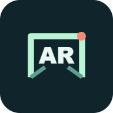

Separate AR projects and preserved experiment collections.
▣Tabletop TV
Samsung 55-inch Mini LED M1EH 2026. Fixed 1:1 scale, Basic Feet approximation and stand footprint. Place on the tabletop, rotate on the spot or reposition.
Physical measurements required. Real phone tracking test pending.
Open tabletop TV
AR Occlusion
Current square plus preserved form, lettering, semicircle and square experiments.
Open AR OcclusionStone Room
Separate preserved Stone Room collection. Accepted Bellbrook Yowie 4 and its own earlier experiments.
Accepted PC build and preserved Stone Room experiments.
Open Stone Room collectionCamera edge outline
Compare your camera with live OpenCV outlines. Start, stop, capture and a camera-free sample.
Separate experiment. No hidden-background recovery.
Open camera outlinesPrinted marker AR
Show a rotating object on an ordinary printed Hiro picture marker.
Separate AR.js experiment. Physical phone tracking test pending.
Open marker tracker Print Hiro marker Hosted on TRADESIGHT GitHub Pages. Once published, this website works with the development PC off and does not need a ChatGPT subscription. Internet and a compatible browser are required.